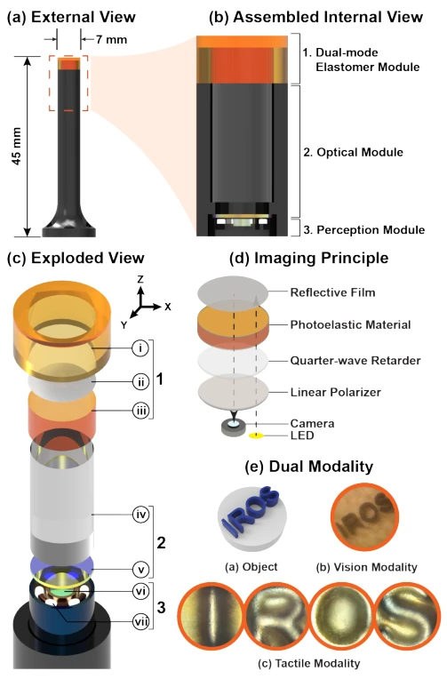
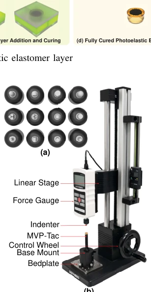
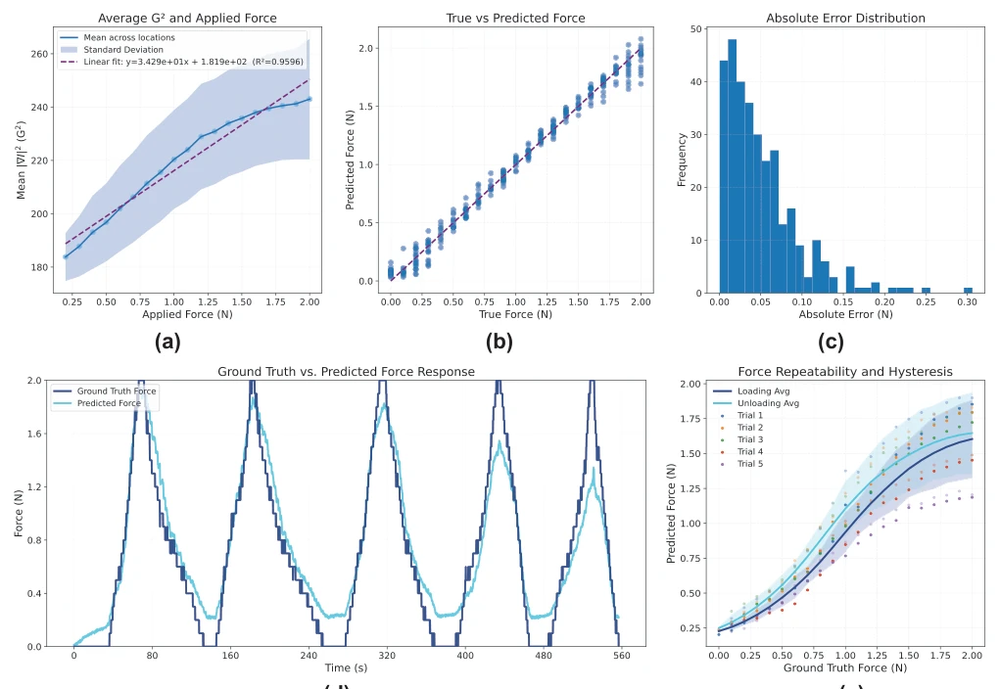
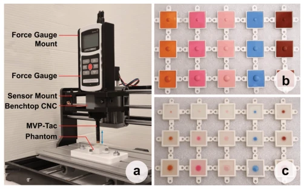
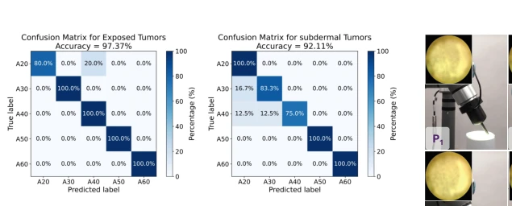
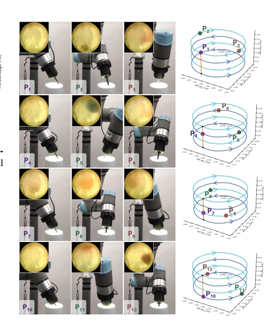
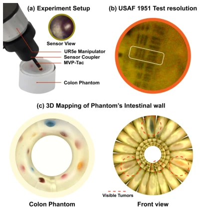

This MVP-Tac essentially adds a "X-ray vision" and "haptic sense" to minimally invasive surgical robots, attempting to solve the chronic issue of missing haptics in RMIS. The authors cleverly embed haptics and vision into the same probe using the photoelastic effect. The design of switching modes via a semi-transparent film is indeed clever, solving the long-standing problem of "touching" and "seeing" conflicting. However, do not rush to praise; the material remains the creep-prone VytaFlex, and a repeatability error of 33% sounds a bit alarming. Moreover, it saturates at a 2N upper limit; in real surgery, applying slightly more force might render it useless. The so-called colonoscopy simulation is still worlds away from real human tissue, and sterilization and biocompatibility are also not mentioned. Open source is good, but the semi-transparent film spraying process is likely harder to mass-produce than parameter tuning. Overall, it is an excellent prototype verification, but still several generations of iteration away from clinical implementation, belonging to the type that "works in the lab but dare not be used on the operating table".
The biggest pain point of minimally invasive surgery (RMIS) is "hand-eye separation": doctors cannot see or touch, relying only on visual navigation, easily missing deep tumors. Existing haptic sensors mostly sacrifice vision; for example, the GelSight series [2], although high precision, has internal illumination structures difficult to miniaturize, unsuitable for endoscopes. Some other schemes use opaque layers [21], [23], [24], directly blocking the camera, unable to navigate simultaneously. Vision-only endoscopes cannot reliably identify lesions that are normal on the surface but hard deep inside, leading to missed diagnoses or excessive exploration. Existing photoelastic schemes are usually bulky [27]-[29], unable to integrate. Therefore, designing a compact, dual-modal sensor to restore clinically usable palpation ability without sacrificing vision is the current urgent need. This is not only a hardware integration issue, but also how to restore mechanical perception without sacrificing navigation safety.

Fig. 1: Overview of the MVP-Tac sensor. (a) External view of the sensor showing its overall form factor and outer dimensions. (b) Assembled internal view highlighting the arrangement of the main sensing modules. (c) Exploded view illustrating the key structural and sensing components of the system: (i) Protective elastomer layer, (ii) Semi-transparent reflective coating, (iii) Photoelastic elastomer layer, (iv) Acrylic Spacer, (v) Circular polarizer film, (vi) Camera and (vii) LEDs. (d) Imaging principle of the sensor based on photoelasticity. (e) Dual-modality operation of the sensor
The overall process is divided into hardware perception and algorithm estimation. In hardware, reflective circular polarized photoelastic imaging is adopted, with camera and light source on the same side, switching visual/haptic modes via a semi-transparent film. The core is the photoelastic elastomer layer (VytaFlex), which produces birefringence under force, forming interference fringes in reflected light. The optical path passes through a linear polarizer, quarter-wave plate, passes through the elastomer, reflects, and passes through again, doubling the optical path to enhance sensitivity. In algorithms, force estimation fuses global G2 gradient features and local image features, predicting normal force via a dual-branch neural network. Hardness classification is based on video sequences, using ResNet-18 to extract frame features and GRU to model temporal dynamics. Innovations lie in: 1. Reflective optical path design, no structured light needed, simplifying miniaturization difficulty; 2. Semi-transparent film coating process, achieving mode switching under the same field of view; 3. Data fusion strategy, combining scalar G2 with image texture, improving force estimation robustness. Additionally, the fabrication process uses 3D printing and off-the-shelf materials, low cost, easy to reproduce. The whole system is compact, suitable for endoscope deployment, solving the problem of traditional photoelastic equipment being too large.

Fig. 3: Experimental setup for calibrating the MVP-Tac sensor. A Mark-10 force gauge is mounted on a linear stage to apply controlled normal forces. The MVP-Tac sensor is fixed at the base of the stage, allowing precise force application and measurement during calibration.
实验Experiments
实验分三部分：力校准、肿瘤检测、结肠镜模拟。力校准在 0-2N 范围，MAE 0.0511N，误差在可接受范围内。肿瘤检测用不同硬度（20-60A）硅胶 phantom，暴露和皮下两种场景，视频分类准确率分别达 97% 和 92%。结肠镜模拟中，机器人扫描构建 3D 管腔图，并在约束空间内完成触诊，硬度分类 100% 准确。发现：材料在接近 2N 时非线性明显，恢复慢导致迟滞。视频分类比单帧力估计更鲁棒。仿真环境验证了“先视后触”的工作流可行性，但 phantom 硬度范围有限。UR5e 机械臂配合传感器实现了 3D 重建，证明了在狭窄空间内的导航能力。
Experiments are divided into three parts: force calibration, tumor detection, colonoscopy simulation. Force calibration in 0-2N range, MAE 0.0511N, error within acceptable range. Tumor detection uses silicone phantoms of different hardness (20-60A), exposed and subcutaneous scenarios, video classification accuracy reaches 97% and 92% respectively. In colonoscopy simulation, the robot scans to construct a 3D lumen map and completes palpation within constrained space, hardness classification 100% accurate. Findings: Material nonlinearity is obvious near 2N, slow recovery causes hysteresis. Video classification is more robust than single-frame force estimation. Simulation environment verifies the feasibility of "vision first then touch" workflow, but phantom hardness range is limited. UR5e manipulator combined with sensor achieved 3D reconstruction, proving navigation capability in narrow spaces.

Fig. 4: Force repeatability and hysteresis characterization. Dots represent measurements from five repeated trials, while the solid curves indicate the smoothed trial-averaged responses during loading and unloading cycles.

Fig. 5: Experimental setup for tumor detection: (a) Tumor phantoms are placed on a CNC bed while MVP- Tac is mounted on the tool head to perform controlled indentation along the z-axis. (b) Exposed-tumor phantoms. (c) Subdermal-tumor phantoms. For both sets, hardness in- creases from 20A to 60A (left to right), and nodule diameter increases from 4 to 12,mm (top to bottom).

Fig. 6: Confusion matrices for video-based hardness clas- sification. (a) Exposed tumor experiments and (b) Subdermal tumor experiments.

Fig. 8: MVP-Tac mounted on a UR5e robot follows a stepwise circular scanning trajectory to map the luminal wall. The black region indicates the sensor’s camera view. After each full rotation, the manipulator advances 10 mm along the lumen and rotates in the opposite direction to achieve efficient coverage. During scanning, we record the video stream together with end-effector poses and robot joint angles, which are required for 3D mapping.

Fig. 7: Colonoscopy setup experiment: (a) Components of the experimental setup, with MVP-Tac gently palpating a tumor nodule. (b) Internal structure of the colon phantom. (c) Reconstructed 3D model of the phantom’s luminal wall generated from the sensor’s recorded visual stream.